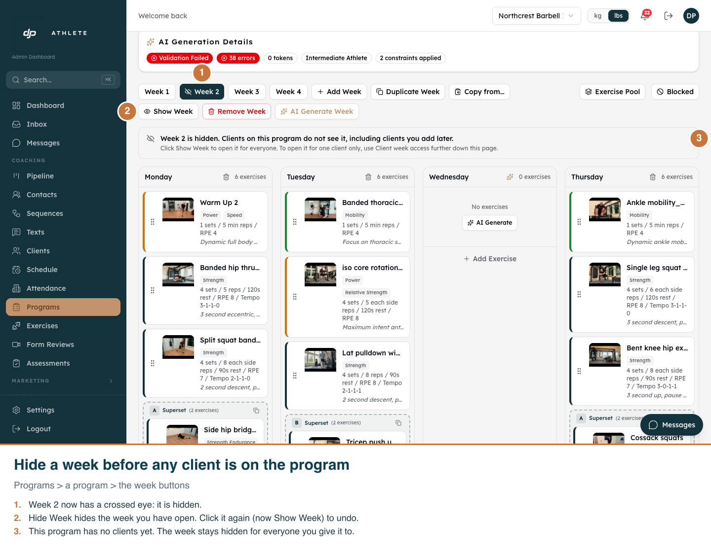
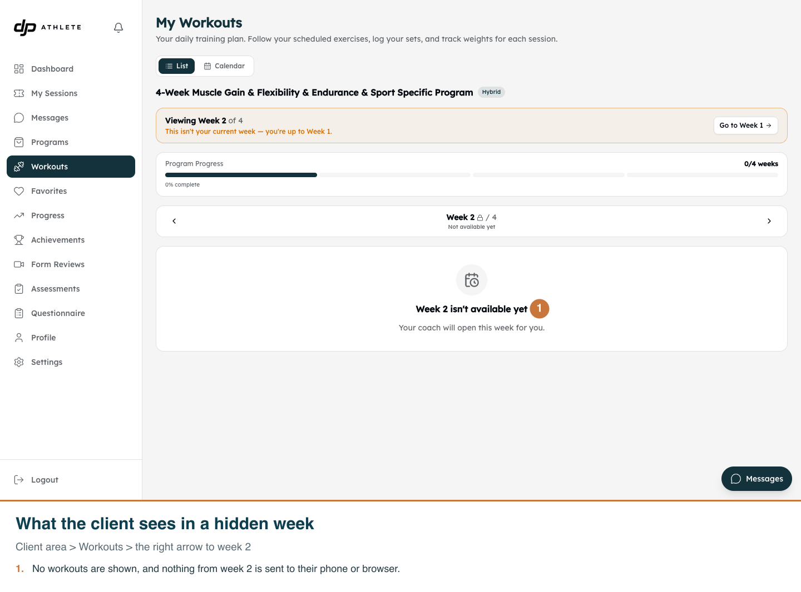
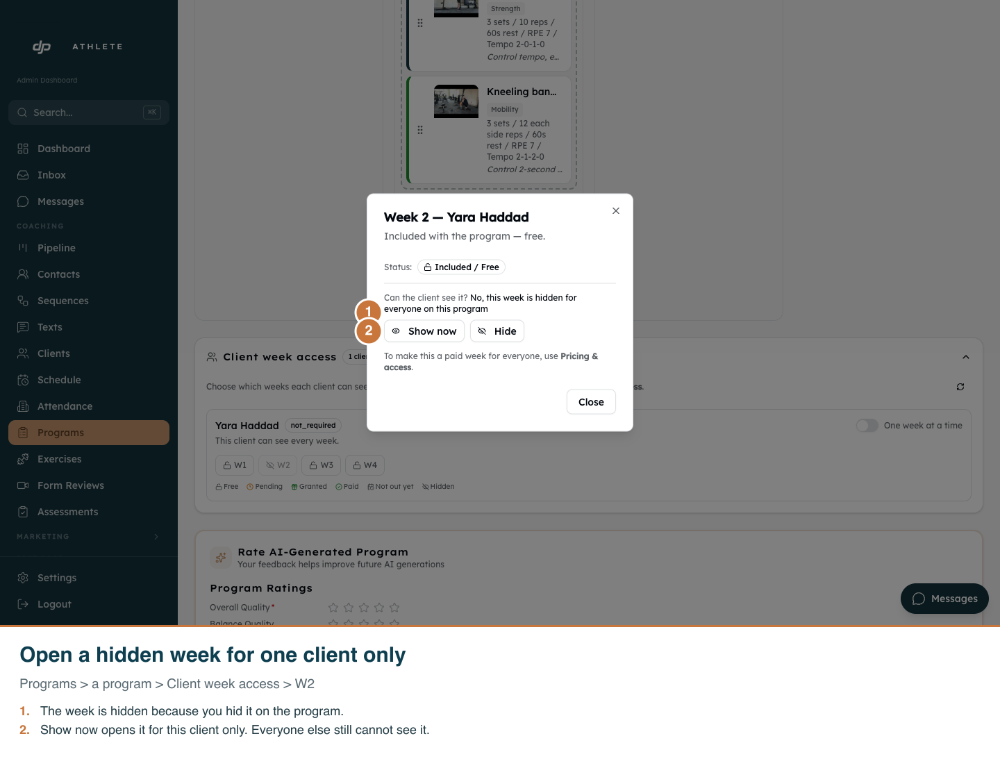

Hide a week on a program
Real app, development clone, light mode only (neither the admin nor the client area has a dark mode).

01. Open a week and click Hide Week. It works before anyone is on the program, and stays hidden for every client you add.

02. The client can see that week 2 exists, but none of its workouts.

03. Once clients are on the program, you can still open a hidden week for one person.